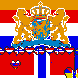
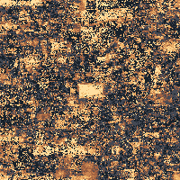

Three conflicts on the canvas
A border agreement broke down, a gaming community rebuilt its logo, and two flags gave way to a shared emblem. Follow each event through the canvas frames and the discussions happening alongside them. Compare repaint activity across the canvas.

The Armenian flag and the Dutch lionArmenian and GreyBlob participants agreed on a border. A Dutch coat of arms later covered both drawings. The osu! logo, the streamer raid and the VoidA raid blackened the pink osu! logo. The Void claimed the attack, its own members argued about it, and the builders returned.
The osu! logo, the streamer raid and the VoidA raid blackened the pink osu! logo. The Void claimed the attack, its own members argued about it, and the builders returned. France, Germany and the EU flagGerman stripes crossed the French tricolour. Builders from both sides turned the disputed patch into a European flag.
France, Germany and the EU flagGerman stripes crossed the French tricolour. Builders from both sides turned the disputed patch into a European flag.
Conflict
Across the canvas, 26.4% of placements repeated the color already on the pixel. People could choose the same color while defending a flag or simply paint at the same time. The discussions in the three cases help distinguish those accounts.

Each square covers 5 by 5 pixels. Warmer squares had a larger share of same-color placements in the hour shown. Even a quiet square can have a high share.
- No activity
- 0%
- Up to 10%
- >10 to 25%
- >25 to 40%
- >40 to 60%
- Over 60%
What people placed each hour
First placement counts the first mark on a pixel (997,263). Changed color counts a new color on a previously marked pixel (11,188,805), including returns to an earlier color. A repaint repeats the color already there (4,370,182).
- First placement
- Changed color
- Repaint
Download the hourly counts (CSV) · See all placements on the canvas
How the placements were counted
The counts cover 16,556,250 placements inside the canvas during the study window. Each placement is compared with the last color on that pixel, even across hour boundaries. The 391 earlier test placements establish the starting state and are excluded from the totals. When placements tie on pixel and time, we sort by color.